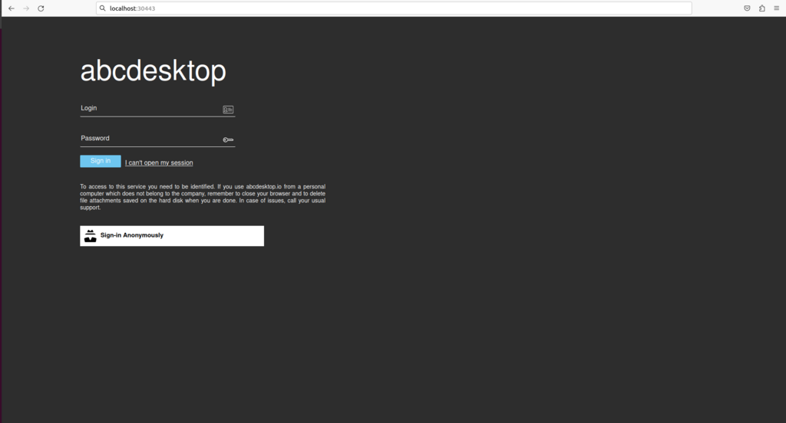
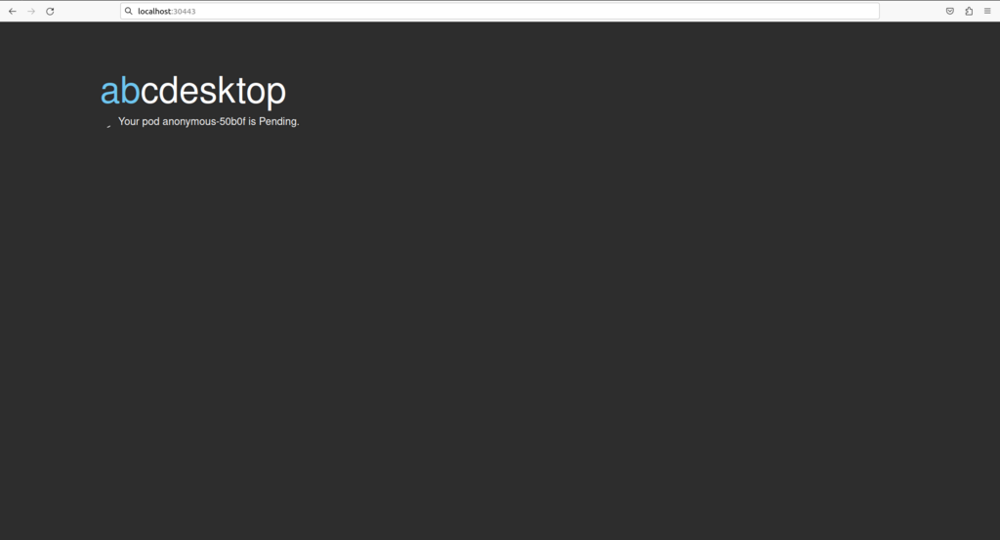
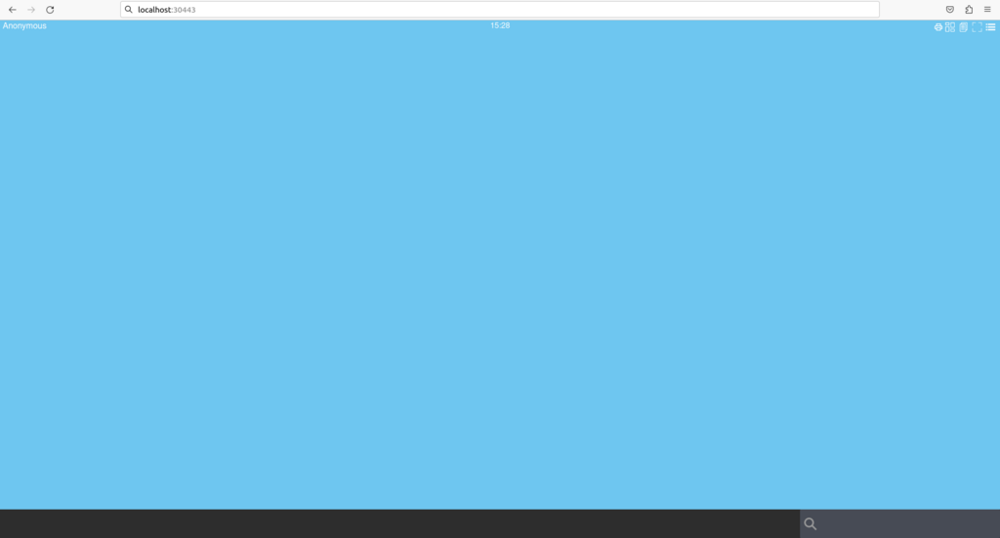

Install installation
Requirements
- kubernetes cluster
READYto run kubectlorminikubecommand-line tool must be configured to communicate with your cluster.opensslandcurlcommand line must be installed too (only for install using kubectl).
You can run the Quick installation process or choose the Manually installation step by step
Linux operating system is recommanded to run abcdesktop.io.
Step 1: Create abcdesktop namespace
We will create the abcdesktop namespace and set it as default :
kubectl create namespace abcdesktop
You should read on the standard output
namespace/abcdesktop created
Step 2: Secure abcdesktop JWT exchange
User JWT is signed. So we need to define a (private, public) RSA keys for signing. Desktop JWT is encrypted AND signed. So we need to define a (private, public) RSA keys for signing, and a (private, public) RSA keys to encrypt data.
- The JWT payload is encrypted with the abcdesktop jwt desktop payload private by pyos
- The JWT payload is decrypted with the abcdesktop jwt desktop payload public keys by nginx.
Please use the payload private as private key, and the payload public as private key. Do not publish the public key. This public key must stay private, this is a special case, this is not stupid, it's only a more secure option.
- The JSON Web Tokens payload is signed with the abcdesktop jwt desktop signing private keys
-
The JSON Web Tokens payload is verified with the abcdesktop jwt desktop signing public keys.
-
The JSON Web Tokens user is signed with the abcdesktop jwt user signing private keys by pyos.
- The JSON Web Tokens user is verified with the abcdesktop jwt user signing public keys by pyos
As multiple pods of pyos can run simultaneously, the same private and public keys value are stored into kubernetes secret.
The abcdesktop jwt desktop payload public key is read by nginx lua script. The exported the public key need the RSAPublicKey_out option, to use the RSAPublicKey format. The RSAPublicKey format make key file format compatible between python 3.x jwt module and lua jwt lib.
The following commands will let you create all necessary keys :
# Desktop payload keys (encrypt/decrypt)
openssl genrsa -out abcdesktop_jwt_desktop_payload_private_key.pem 1024
openssl rsa -in abcdesktop_jwt_desktop_payload_private_key.pem \
-outform PEM -pubout -out _abcdesktop_jwt_desktop_payload_public_key.pem
openssl rsa -pubin -in _abcdesktop_jwt_desktop_payload_public_key.pem \
-RSAPublicKey_out -out abcdesktop_jwt_desktop_payload_public_key.pem
# Desktop signing keys
openssl genrsa -out abcdesktop_jwt_desktop_signing_private_key.pem 1024
openssl rsa -in abcdesktop_jwt_desktop_signing_private_key.pem \
-outform PEM -pubout -out abcdesktop_jwt_desktop_signing_public_key.pem
# User signing keys
openssl genrsa -out abcdesktop_jwt_user_signing_private_key.pem 1024
openssl rsa -in abcdesktop_jwt_user_signing_private_key.pem \
-outform PEM -pubout -out abcdesktop_jwt_user_signing_public_key.pem
Then, create the kubernetes secrets from the new key files:
kubectl create secret generic abcdesktopjwtdesktoppayload \
--from-file=abcdesktop_jwt_desktop_payload_private_key.pem \
--from-file=abcdesktop_jwt_desktop_payload_public_key.pem \
--namespace=abcdesktop
kubectl create secret generic abcdesktopjwtdesktopsigning \
--from-file=abcdesktop_jwt_desktop_signing_private_key.pem \
--from-file=abcdesktop_jwt_desktop_signing_public_key.pem \
--namespace=abcdesktop
kubectl create secret generic abcdesktopjwtusersigning \
--from-file=abcdesktop_jwt_user_signing_private_key.pem \
--from-file=abcdesktop_jwt_user_signing_public_key.pem \
--namespace=abcdesktop
You should read on the standard output :
secret/abcdesktopjwtdesktoppayload created
secret/abcdesktopjwtdesktopsigning created
secret/abcdesktopjwtusersigning created
You can verify secrets creation with the following command :
kubectl get secrets -n abcdesktop
You should read on the standard output :
NAME TYPE DATA AGE
abcdesktopjwtdesktoppayload Opaque 2 68s
abcdesktopjwtdesktopsigning Opaque 2 68s
abcdesktopjwtusersigning Opaque 2 67s
Step 3: Download and create the abcdesktop config file
Download the od.config file. This is the main configuration file for pyos control plane.
curl https://raw.githubusercontent.com/abcdesktopio/conf/main/reference/od.config.{{ version }} --output od.config
Create the config map abcdesktop-config in the abcdesktop namespace
kubectl create configmap abcdesktop-config --from-file=od.config -n abcdesktop
You should read on sdtout
configmap/abcdesktop-config created
Step 4: Create the abcdesktop pods and services
abcdesktop.yaml file contains declarations for all roles, service account, pods, and services required for abcdesktop.
Run the command line
kubectl create -n abcdesktop -f https://raw.githubusercontent.com/abcdesktopio/conf/main/kubernetes/abcdesktop-{{ version }}.yaml
You should read on the standard output
role.rbac.authorization.k8s.io/pyos-role created
rolebinding.rbac.authorization.k8s.io/pyos-rbac created
serviceaccount/pyos-serviceaccount created
configmap/configmap-mongodb-scripts created
secret/secret-mongodb created
deployment.apps/mongodb-od created
deployment.apps/memcached-od created
deployment.apps/router-od created
deployment.apps/nginx-od created
deployment.apps/speedtest-od created
deployment.apps/pyos-od created
deployment.apps/console-od created
deployment.apps/openldap-od created
endpoints/desktop created
service/desktop created
service/memcached created
service/mongodb created
service/speedtest created
service/pyos created
service/console created
service/http-router created
service/website created
service/openldap created
Once the pods are created, all pods should be in Running status.
For the first time, please wait for downloading all container images.
It can take a while.
kubectl get pods -n abcdesktop
You should read on the standard output
NAME READY STATUS RESTARTS AGE
console-od-79bf9bf475-cqtj5 1/1 Running 0 2m18s
memcached-od-d4b6b6867-djzr6 1/1 Running 0 2m19s
mongodb-od-5d996fd57b-gn4hv 1/1 Running 0 2m19s
nginx-od-796c7d7d6b-rk2d5 1/1 Running 0 2m19s
openldap-od-567dcf7bf6-krhpw 1/1 Running 0 2m18s
pyos-od-65bdd9d479-5228d 1/1 Running 0 2m18s
router-od-7b6dff8dd4-pn587 1/1 Running 0 2m19s
speedtest-od-7fcc9649b4-n2ldl 1/1 Running 0 2m18s
Step 5: Connect your local abcdesktop
Open your navigator to http://[your-ip-hostname]:30443/
abcdesktop homepage should be available :

Click on the Connect with Anonymous access button. abcdesktop service pyos is creating a new pod.

Few seconds later, processes are ready to run. You should see the abcdesktop main screen, with no application in the dock.

Also, you can run again the command
kubectl get pods -l type=x11server -n abcdesktop
You should see that the anonymous-XXXXX pod have been created and is Running
NAME READY STATUS RESTARTS AGE
anonymous-c44fc 5/5 Running 0 116s
Great you have installed abcdesktop.io. You just need a web browser to reach your web workspace. It' now time to add some container applications. Read the next chapter to add applications